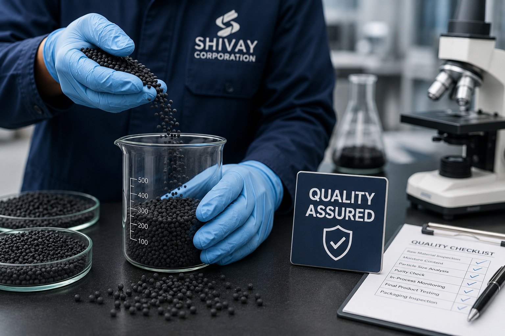
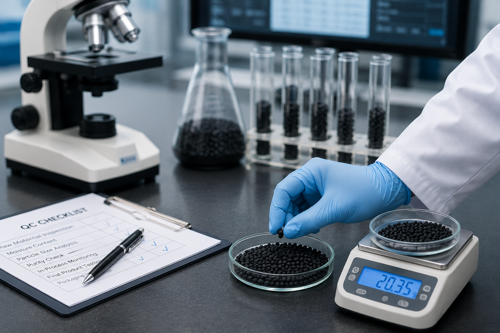

Every product manufactured at Shivay Corporation undergoes stringent quality checks from incoming raw material inspection through in-process monitoring and final product verification.
Our manufacturing systems are designed to maintain consistency, product integrity and customer satisfaction while complying with statutory and industry requirements.

Every batch is manufactured with strict process controls to ensure consistency, reliability and customer satisfaction.
Safe manufacturing practices are maintained throughout production to protect employees, products and operational processes.
Manufacturing activities comply with applicable statutory requirements and industry standards.
Responsible manufacturing practices minimize environmental impact while supporting sustainable agricultural growth.

Quality assurance is integrated throughout our manufacturing workflow, ensuring every product meets customer specifications before dispatch.
Raw materials are verified before entering the production process.
Continuous monitoring ensures process stability and product consistency.
Finished products are inspected before packing and dispatch.
Regular process reviews help improve manufacturing efficiency and quality.
At Shivay Corporation, quality is not a final inspection— it is an integral part of every manufacturing activity, ensuring reliable products, customer satisfaction and long-term partnerships.
Our commitment to quality, safety, compliance and continuous improvement ensures every product is manufactured to the highest standards while meeting your business objectives and customer expectations.